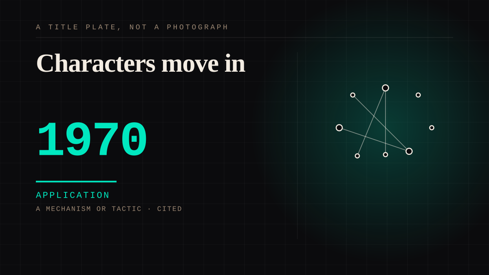

A mechanism or tactic · 1970 · Fiction
Characters move in
The fictional thing rents space in someone's head and starts paying rent in meaning. You rehearse the encounters, you decorate them, you introduce them to friends like a roommate.

Fiction is the safest place on earth to find out what you actually feel, because nothing in there can disappoint you on purpose. The only line worth drawing is where the room starts making house rules - when the lore thread replaces the friend, or the edit replaces sleep. That line is always felt long before it can be explained.
Application. One-sided attachment put to work on purpose. Creator economies, community, fandom as infrastructure, and the things that genuinely help people. Not automatically good - a tool with an obvious use is a tool that will also get a bad one.
Manipulation. One-sided attachment engineered for somebody else's benefit. Paid intimacy, parasocial persuasion, sasaeng, grief extraction, the streak. The lane that pays the bills and the lane that causes the most harm, frequently at the same time.
Where it sits
1950 1950-1999 · 1970 1999
Provenance · 15 source record(s)
- retrievableA fictional character who moves into your home and stays: Mr. Belvedere, an English butler employed as a live-in housekeeper by an American family, 1985-1990, 117 episodes. He is nursemaid, cook, cleaner, confidant and conscience, and he never leaves until the finaleMr. Belvedere (Wikipedia). ↗
- retrievableAND THE DEVICE THAT MAKES IT PARASOCIAL RATHER THAN SITCOM: every episode ends with Belvedere writing in his journal, giving the moral and putting the week's events in perspective. The character keeps a diary about the family - and about the audience watching him keep itMr. Belvedere - Plot (IMDb). ↗
- unverifiedThe setting was fabricated wholesale: the producers had never visited Pittsburgh, worked from a promotional calendar, and shot no scenes there. The household is a set of rooms in a place that does not existMr. Belvedere (Wikipedia), reporting Dungan and Stein. ↗
- retrievableAnd the exit, which is the point: in the two-part finale he marries and moves to Africa, leaving the family. The character that moved in eventually has to leave, and the audience is not consultedMr. Belvedere - Premise (Liquisearch). ↗
- retrievableTHE MECHANISM, STATED PLAINLY BY SOMEONE MEASURING IT: stories and story characters provide interpersonal intimacy WITHOUT THE THREAT OF REJECTION. That is the whole reason a fictional figure can be safer than a personRain, M., & Mar, R. A. (2021). Adult attachment and engagement with fictional characters. ↗
- unverifiedAnd it is conditional, which is the uncomfortable part: attachment anxiety and avoidance DIFFERENTIALLY predict character identification and parasocial interaction, and a high-powered pre-registered follow-up found attachment orientation predicts which characters people are drawn to. Some characters are wanted because they are unavailableRain & Mar (2021). ↗
- retrievableSometimes you are not watching the character, you ARE it - and the literature distinguishes the two. A player-avatar relationship can be MONADIC, where the player identifies with the avatar to the point of being the same being, or DYADIC, where a separation makes it closer to a parasocial relationship. Same apparatus, opposite structureFerchaud, A. (2024). Identification and Parasocial Relationships With Video Game Characters. Oxford Research Encyclopedia of Communication. ↗
- retrievableWhat it takes linguistically, from interviews with MMO players: SELF-DIFFERENTIATION and ANTHROPOMORPHIZATION together suspend disbelief enough for the figure to be taken as a fully social agent. You have to make it different from you and also human, at the same timeAvatars are (sometimes) people too: Linguistic indicators of parasocial and social ties in player-avatar relationships. New Media & Society. ↗
- retrievableThe bond once mistaken for pathology is ordinary attachment style: research on intimate television viewing shows people forming relationships parasocially and insecurely, and treats it as a predictable outcome of disposition rather than a malfunctionCole, T., & Leets, L. (1999). Attachment Styles and Intimate Television Viewing: Insecurely Forming Relationships in a Parasocial Way. Journal of Social and Personal Relationships, 16(4), 495-511. ↗
- retrievableAnd the predictable ending, named in the literature: parasocial break-up from favourite television characters is studied as its own phenomenon, driven by attachment style and relationship intensity rather than by anything the character didCohen, J. (2004). Parasocial Break-Up from Favorite Television Characters: The Role of Attachment Styles and Relationship Intensity. Journal of Social and Personal Relationships, 21(2), 187-202. ↗
- retrievableTHE ABSENT REPLY, WHICH IS THE WHOLE ARGUMENT IN 1774. Werther writes to his friend Wilhelm but the reader never sees Wilhelm's replies - the letters are missing. The reader therefore becomes Wilhelm's stand-in and must supply the response themselves. An 18th-century readership expecting an explicit moral from the narrator is instead left to answer for a character who cannot answerGoethe's Werther and its effects. The Lancet Psychiatry (2014). ↗
- retrievableBut the epidemic is NOT established, and the site's honesty requires saying so: a systematic search of German, Austrian and Swiss newspaper databases since 1774 found eight previously undocumented suicides the press connected to the novel, while the papers themselves reported the 'Werther-epidemic' and its moral implications far more than individual imitative suicides. Whether it substantiates an epidemic remains up to interpretationAnecdotal Evidence in Historical News Reports (2023), reviewing suicides the press connected to Goethe's Werther since 1774. ↗
- unverifiedThere is a counter-effect and it has a name too: the Papageno effect, after Mozart's character in The Magic Flute, in which portrayals of a character contemplating suicide who is prevented at the last moment reduce imitation. Media reporting guidelines exist for both. The mechanism runs in both directions and the site should not pretend otherwiseGoethe's Werther and its effects. The Lancet Psychiatry (2014), discussing the Werther and Papageno effects. ↗
- unverifiedByron called Goethe 'the first literary character in Europe' fifty years later, and Napoleon read the novel seven times before discussing it with its author in 1808Goethe's Werther and its effects. The Lancet Psychiatry (2014), citing Bayard Quincy Morgan. ↗
- unverifiedThe register that this whole project is about, stated by the author: when he finished it Goethe likened his mood to being 'after a general confession, joyous and free and entitled to a new life'. For Goethe the Werther effect was cathartic. Not so for its readersGoethe's Werther and its effects. The Lancet Psychiatry (2014), citing David Constantine's introduction to his translation. ↗
CHARACTER The written character
Connected · 0 out, 5 in
Reported as a story
It sits in
The full timeline → · The database → · See it in the atlas →